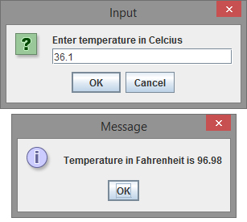

Programming Questions and Exercises : Input Output
Question 1.
Area and Circumference of Circle Write a program that inputs from the user the radius of a circle as an integer and prints the circle’s circumference and area using the predefined constant Math.PI. Use the following formulas (r is the radius):
circumference = 2πr
area = πr2
import java.util.Scanner;
public class Circle
{
public static void main(String[] args)
{
int radius; // To hold circle's radius.
double circumference; // To hold circle's circumference.
double area; // To hold circle's area
// Create a Scanner object to read input.
Scanner console = new Scanner(System.in);
// Get radius from the user.
System.out.print("Enter radius ");
radius = console.nextInt();
// Calculate circumference.
circumference = 2 * Math.PI * radius;
// Calculate area.
area = Math.PI * radius * radius;
// Display circumference and area.
System.out.println("The circumference of circle is "
+ circumference);
System.out.println("The area of circle is " + area);
}
}
Question 2.
Area of Triangle If a triangle has side lengths a,b,c, then the formula for the area of the triangle is area = √s(s − a)(s − b)(s − c), where s = (a + b + c)/2.
Write a program that asks the user to enter three sides of triangle. The program should compute and display the area of triangle.
import java.util.Scanner;
public class TriangleArea
{
public static void main(String[] args)
{
double a, b, c; // To hold three sides
// Create a Scanner object to read input.
Scanner console = new Scanner(System.in);
// Get sides from the user.
System.out.print("Enter Side 1: ");
a = console.nextInt();
System.out.print("Enter Side 2: ");
b = console.nextInt();
System.out.print("Enter Side 3: ");
c = console.nextInt();
// Calculate area.
double s = (a + b + c) / 2;
double area = Math.sqrt(s * (s - a) * (s - b) * (s - c));
// Display area.
System.out.println("The area of triangle is " + area);
}
}
Question 3.
Celsius to Fahrenheit Write a program that asks for a temperature in Celsius and prints out the temperature in Fahrenheit. Use InputBox for input and OutputBox for output. The formula to convert Celsius to the equivalent Fahrenheit is:
fahrenheit = 1.8 x celsius + 32
The output should look like:

import javax.swing.JOptionPane; // Needed for Dialog Box
public class Converter
{
public static void main(String[] args)
{
String input; // To hold String input.
double c; // To hold temperature in celcius.
double f; // To hold temperature in fahrenheit.
// Prompt user to input temperature.
input = JOptionPane
.showInputDialog("Enter temperature in Celcius");
// Convert the String input to a double.
c = Double.parseDouble(input);
// Calculate temperature in fahrenheit.
f = 1.8 * c + 32;
// Display temperature in Fahrenheit.
JOptionPane.showMessageDialog(null,
"Temperature in Fahrenheit is " + f);
}
}
Question 4.
Wall Painting Calculator
Write a program that when complete will calculate the amount of paint needed to paint the walls and the ceiling of a room. Your program should ask length, width, and height of room. Assume that the room has doors and windows the don't need painting. Also the floor in the room is not painted. Ask the user to enter the number of doors and number of windows in the room, and adjust the total square feet to be painted accordingly. Assume that each door is 20 square feet and each window is 15 square feet.
Suppose the paint covers 350 square feet per gallon.
import java.util.Scanner;
public class PaintCalc
{
public static void main(String[] args)
{
int length, width, height, numberOfDoors, numberOfWindows;
Scanner console = new Scanner(System.in);
System.out.print("Enter length: ");
length = console.nextInt();
System.out.print("Enter width: ");
width = console.nextInt();
System.out.print("Enter height: ");
height = console.nextInt();
System.out.print("Enter number of doors: ");
numberOfDoors = console.nextInt();
System.out.print("Enter number of windows: ");
numberOfWindows = console.nextInt();
int totalSurfaceArea = 2 * (length * width + length
* height + width * height);
int areaOfFloor = length * width;
int areaOfDoors = 20 * numberOfDoors;
int areaOfWindows = 15 * numberOfWindows;
int totalPaintArea = totalSurfaceArea - areaOfFloor
- areaOfDoors - areaOfWindows;
int requiredPaint = totalPaintArea / 350;
System.out.println("Paint required "
+ requiredPaint + " gallons.");
}
}
Question 5.
PigLatin Word Write a program that reads a word as input and converts that word to "Pig Latin". In this version of Pig Latin, you convert a word by removing the first letter, placing that letter at the end of the word, and then appending "ay" to the word. Here is an example:
English Word: night
Pig Latin Word: ightnay
import java.util.Scanner;
public class PigLatin
{
public static void main(String[] args)
{
String englishWord; // To hold a word in English
String pigLatinWord; // To hold a word in Pig Latin
// Create a Scanner object to read input.
Scanner console = new Scanner(System.in);
// Get inputs from the user.
System.out.print("Enter a word ");
englishWord = console.next();
// Convert the word in Pig Latin
pigLatinWord = englishWord.substring(1)
+ englishWord.charAt(0) + "ay";
// Display the words.
System.out.println("English Word: " + englishWord);
System.out.println("Pig Latin Word: " + pigLatinWord);
}
}
Answer :
Question 6.
Hours, Minutes and Seconds Write a program that asks the user to enter seconds as integer. The program should compute and display the number of hours, number of minutes and number of seconds in that seconds.
For example if user enters 4205 seconds. The answer should be
Hours : 1
Minutes : 10
Seconds : 5
import java.util.Scanner;
public class Seconds
{
public static void main(String[] args)
{
int seconds; // To hold seconds.
// Create a Scanner object to read input.
Scanner console = new Scanner(System.in);
// Get seconds from the user.
System.out.print("Enter seconds ");
seconds = console.nextInt();
// Calculate hours in that seconds.
int hours = seconds / 3600;
// Calculate remaining minutes in that seconds.
seconds = seconds % 3600;
int minutes = seconds / 60;
// Calculate remaining seconds in that seconds.
seconds = seconds % 60;
// Display result.
System.out.println("Hours: " + hours);
System.out.println("Minutes: " + minutes);
System.out.println("Seconds: " + seconds);
}
}